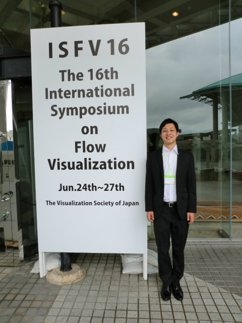
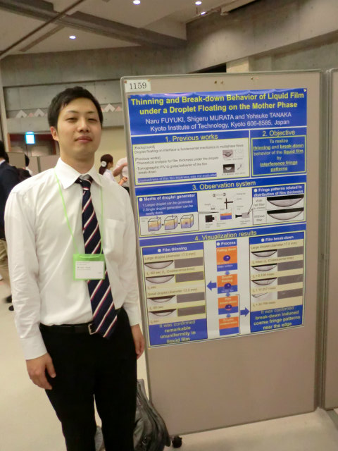
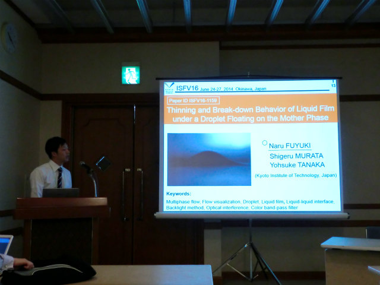
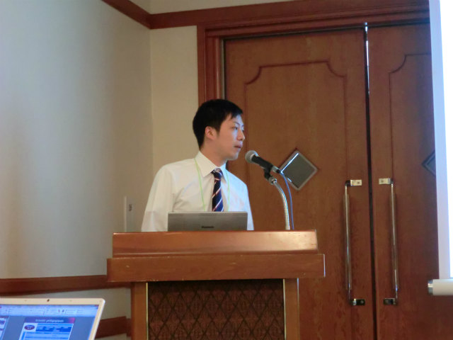
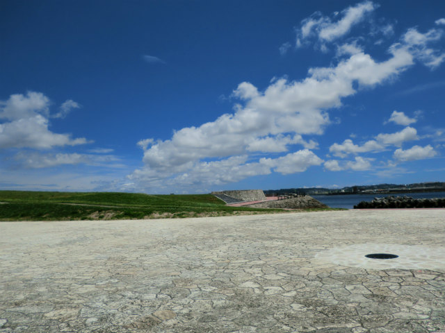
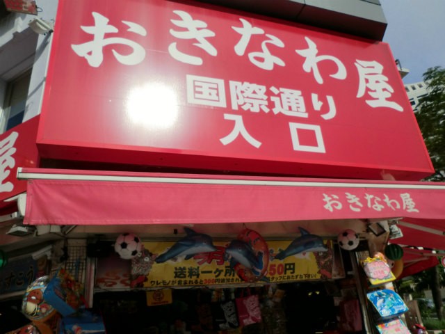

| ・The 16th International Symposium on Flow Visualization (ISFV16) @ Okinawa (H26.06.24-27) | |||
The 16th International Symposium on Flow Visualization (ISFV16)に“Thinning and Break-down Behavior of Liquid Film under a Droplet Floating on the Mother Phase”をM2F木くんが発表しました。M1のときは可視化へ1人でいきましたが、今回も1人です。質疑は準備の甲斐もあったようです。 |
|||
|

助教の人にしつこいくらい撮ってと言われてた写真 |

今回はポスターとプレゼンの2本立て | ||
|

プレゼン開始 |

質疑中 | ||
|

そら、青いね |

国際通り | ||